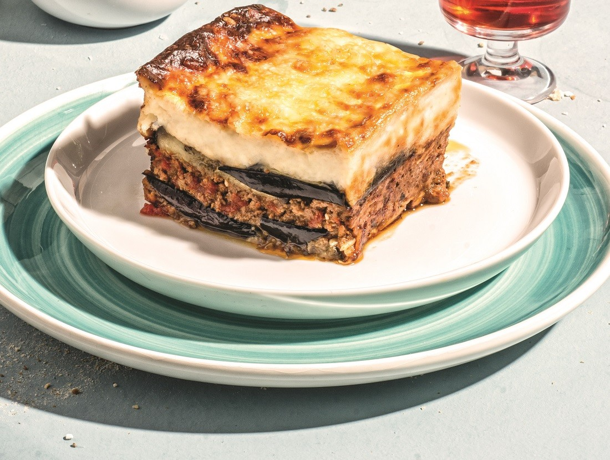

MOUSAKAS

DESCRIPTION
Moussaka is one of the most well-known and beloved dishes of Greek cuisine.Those who visit Greece try this dish and love it. We could say that it is our national dish.
Our favorite moussaka is a dish made with cooked minced meat, eggplants, and potatoes, which can be found in various forms across the Balkans, Middle Eastern countries, Central Europe, Greece, and Turkey. It originates from the Arabic word "musaqqa'a," which means chilled. Here, I present the recipe to help you achieve success on your first attempt!
INGREDIENTS
Moussaka - For the meat filling:
700g beef mince
2 onions
2 carrots
1 tbsp tomato paste
400g canned tomatoes
2 cloves of garlic
1 tsp sugar
1 egg
Parsley, Salt, Pepper
1 cinnamon stick
1 bay leaf
1/2 tsp nutmeg
5 tbsp grated Parmesan cheese
Moussaka - Béchamel sauce:
120g butter
120g all-purpose flour
1 liter milk
1/2 onion
1 bay leaf
1/2 tsp grated nutmeg
3 egg yolks
5 tbsp grated Parmesan cheese
MOUSSAKA- Assembly:
3 eggplants
4 potatoes
Breadcrumbs (finely grated)
Grated Parmesan cheese
STEPS
MOUSSAKA - Recipe:
- We finely chop the onions, garlic, and grate the carrots using the coarse side of a grater.
- In a wide pot, we sauté them and then add the ground beef. We sauté it well until it browns, for about 15 minutes.
- We add the cinnamon, bay leaf, nutmeg, salt, pepper, sugar, and tomato paste.
- We stir for another 2 minutes and then add the canned tomatoes.
- We simmer for 10-15 minutes and remove from heat.
- Once it cools down slightly, we add the egg, grated Parmesan cheese, finely chopped parsley, and season with salt and pepper to taste.
- In a small saucepan, we put the milk, onion, bay leaf, salt, and pepper, and heat it on the stove.
- In another saucepan, we add the butter over medium heat. Once melted, we add the flour and stir for 3 minutes until the flour is incorporated and slightly cooked.
- Gradually, we add the warm milk in batches, stirring with a whisk.
- When we finish adding the milk, we remove the béchamel sauce from the heat when it starts to bubble slightly.
- It should be creamy and smooth.
- We add the grated nutmeg, Parmesan cheese, and egg yolks, and whisk them together.
MOUSSAKA - Assembly
- In a baking dish measuring 25x30 cm or 30x30 cm, sprinkle some breadcrumbs and grated Parmesan cheese.
- We start by placing the potatoes in the entire baking dish, then add the eggplants, placing them tightly next to each other without leaving any gaps.
- Take 2 large spoonfuls of béchamel sauce and add them to the meat mixture, and mix well.
- Spread the meat mixture evenly over the entire baking dish. If you have any leftover eggplant slices, place them on top of the meat. Sprinkle with a little more Parmesan cheese.
- Finally, pour the remaining béchamel sauce over the top.
- Sprinkle with grated Parmesan cheese and breadcrumbs, then bake for about 25 minutes at 190°C (375°F) or until it turns golden brown.
Previous Page